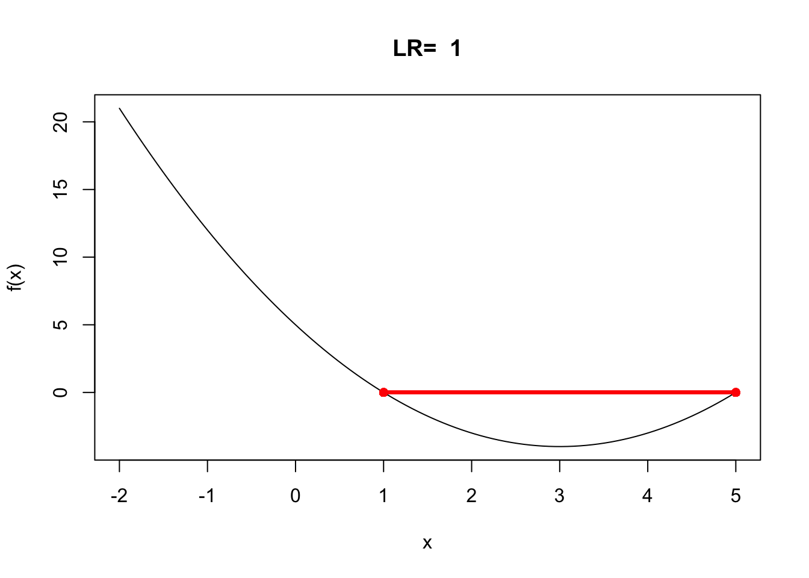
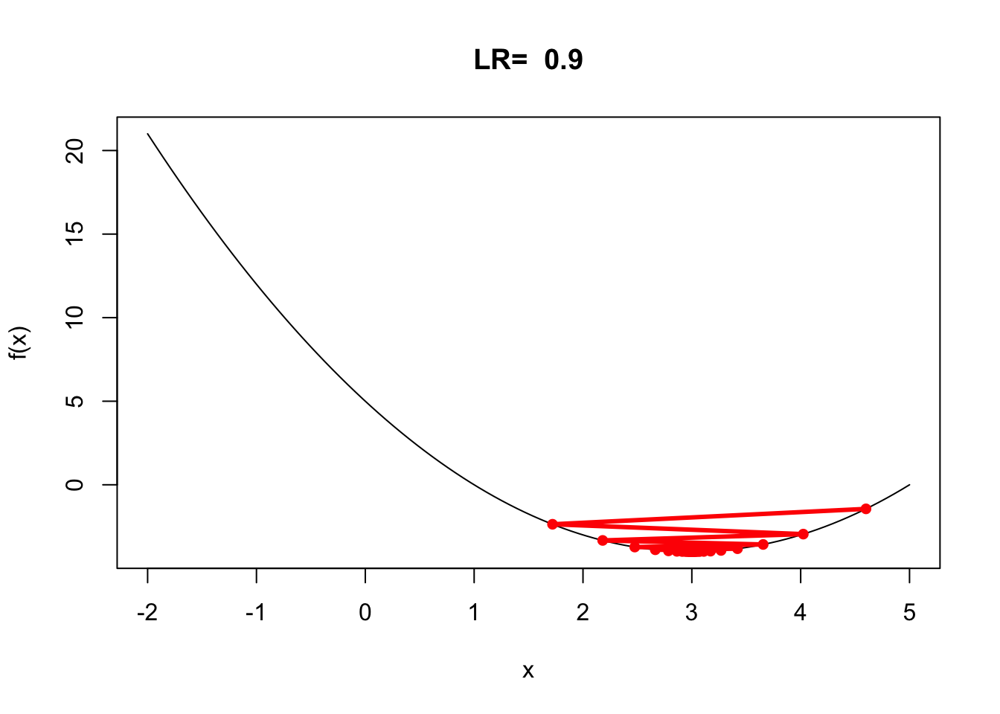
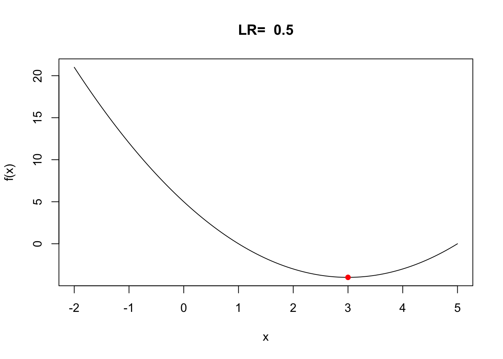
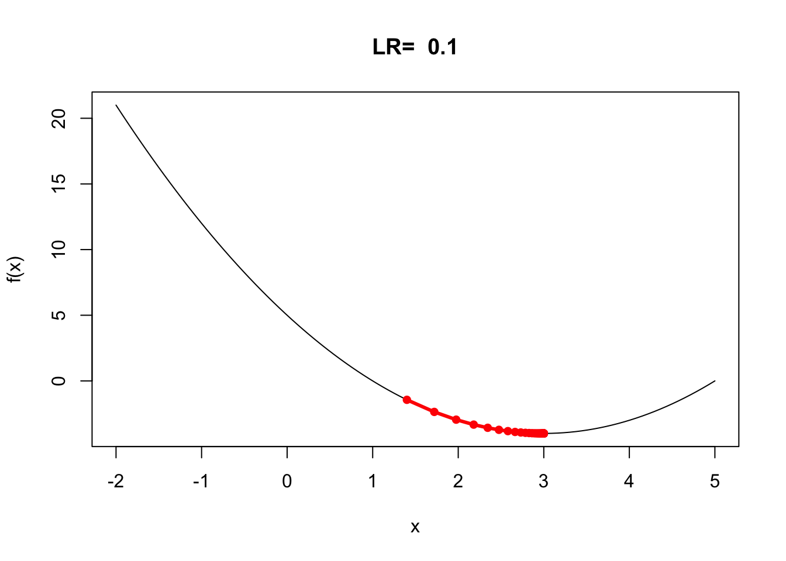
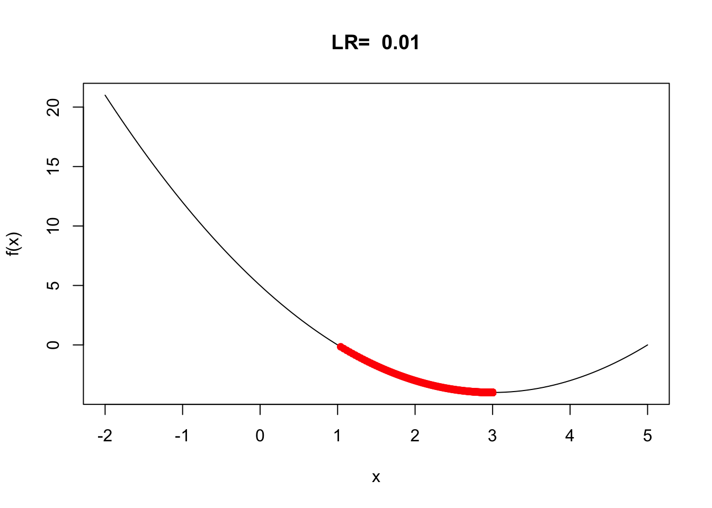
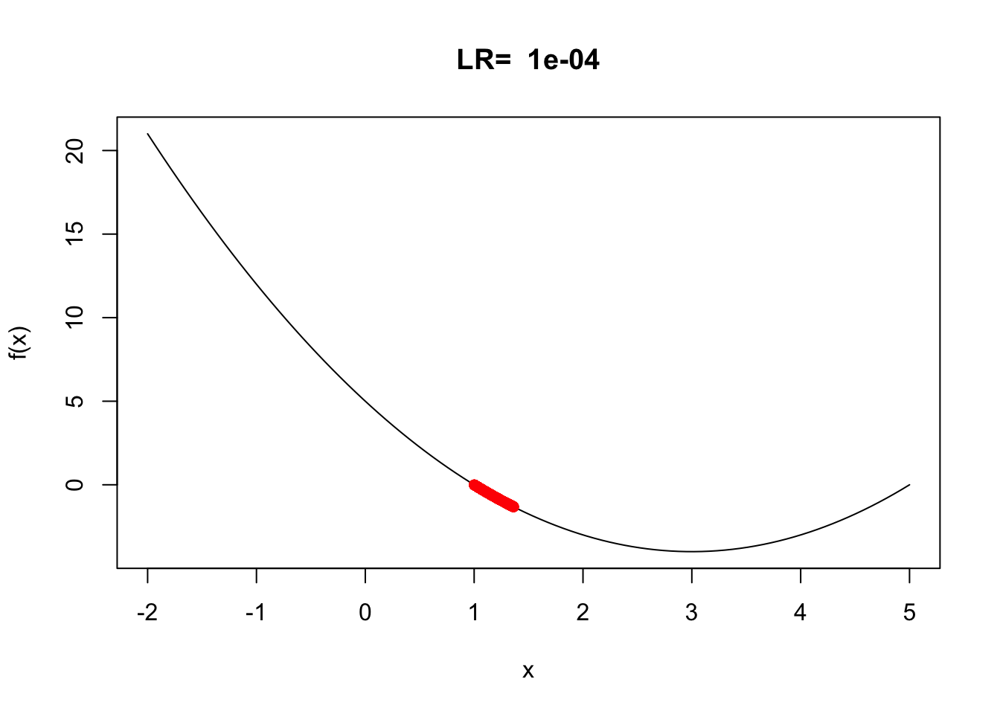
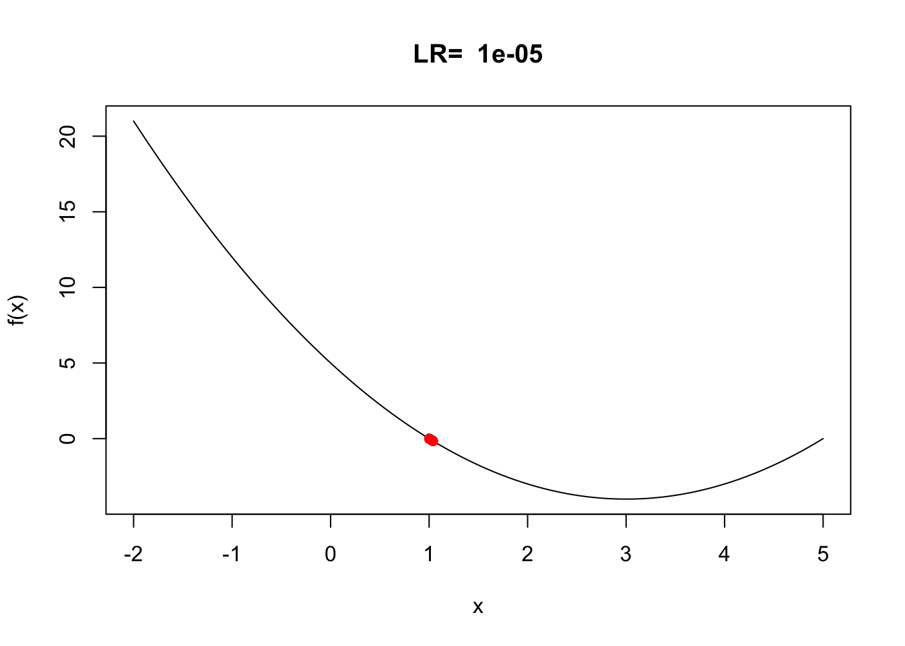

2 Entrenamiento de la red neuronal
El proceso de entrenamiento de una red neuronal consiste en ajustar el valor de los pesos y sesgos (umbrales) de forma que, las predicciones que se generen, tengan el menor error posible. Gracias a esto, el modelo es capaz de identificar qué predictores tienen mayor influencia y de qué forma están relacionados entre ellos y con la variable respuesta.
La idea intuitiva de cómo entrenar una red neuronal es la siguiente:
Iniciar la red con valores aleatorios de los pesos y sesgos.
Para cada conjunto de entrenamiento definido por los inputs y la respuesta \((𝑋, 𝑦)\), se debe calcular el error que comete la red al hacer sus predicciones, promediando los errores de todas las observaciones.
Identificar la responsabilidad que ha tenido cada peso y sesgo en el error de la predicción.
Modificar ligeramente los pesos y sesgos de la red (de forma proporcional a su responsabilidad en el error) en la dirección correcta para que se reduzca el error.
Repetir los pasos 2, 3, 4 y 5 hasta que la red sea suficientemente buena.
Si bien la idea parece sencilla, alcanzar una forma de implementarla ha requerido la combinación de múltiples métodos matemáticos, en concreto, el algoritmo de retropropagación (backpropagation) y la optimización por descenso del gradiente (gradient descent).
En este tema profundizaremos en los conceptos relacionados con el entrenamiento de una red neuronal.
2.1 Preprocesado de inputs
A la hora de entrenar modelos basados en redes neuronales es necesario realizar, al menos, dos tipos de transformaciones de los datos. Procedemos igual que en cualquier otro algoritmo de aprendizaje automático.
Codificación (One hot ecoding) de las variables categóricas
La binarización (one-hot-encoding) consiste en crear nuevas variables dummy con cada uno de los niveles de las variables cualitativas. Por ejemplo, una variable llamada color que contenga los niveles rojo, verde y azul, se convertirá en tres nuevas variables (color_rojo, color_verde, color_azul), todas con el valor 0 excepto la que coincide con la observación, que toma el valor 1.
Estandarización y escalado de variables numéricas
Cuando los predictores son numéricos, la escala en la que se miden, así como la magnitud de su varianza, pueden influir en gran medida en el modelo. Si no se igualan de alguna forma los predictores, aquellos que se midan en una escala mayor o que tengan más varianza dominarán el modelo aunque no sean los que más relación tengan con la variable respuesta. Existen principalmente dos estrategias para evitarlo:
Centrado: consiste en restarle a cada valor la media del predictor al que pertenece. Si los datos están almacenados en un dataframe, el centrado se consigue restándole a cada valor la media de la columna en la que se encuentra. Como resultado de esta transformación, todos los predictores pasan a tener una media de cero, es decir, los valores se centran en torno al origen.
Normalización (estandarización): consiste en transformar los datos de forma que todos los predictores estén aproximadamente en la misma escala. Las dos opciones habituales son:
- Normalización Z-score (StandardScaler): dividir cada predictor entre su desviación típica después de haber sido centrado, de esta forma, los datos pasan a tener una distribución normal.
- Estandarización max-min (MinMaxScaler): transformar los datos de forma que estén dentro del rango [0, 1].
2.2 Funciones de activación
Como ya vimos en el tema anterior, las funciones de activación controlan en gran medida qué información se propaga desde una capa a la siguiente (forward propagation). Estas funciones convierten el valor neto de entrada a la red neuronal, combinación de los inputs, pesos y sesgos, en un nuevo valor. En el cuaderno anterior ya vimos el comportamiento de la función de activación de salto, pero no es la única existente. En concreto, el uso de funciones de activación no lineales con múltiples capas es lo que permite que los modelos de redes sean capaces de aprender relaciones no lineales.
La gran mayoría de funciones de activación convierten el valor de entrada neto de la neurona en un valor dentro del rango (0, 1) o (-1, 1). Cuando el valor de activación de una neurona (salida de su función de activación) es cero, se dice que la neurona está inactiva, ya que no pasa ningún tipo de información a las siguientes neuronas. A continuación, se describen las funciones de activación más empleadas así como la derivada de dicha función que será utilizada en el proceso de entrenamiento de la red.
2.2.1 Sigmoide
La función de activación sigmoide acepta un número como entrada y devuelve un número entre 0 y 1. Es fácil de usar y tiene todas las cualidades deseables de las funciones de activación: no linealidad, diferenciación continua, monotonicidad y un rango de salida establecido.
Se utiliza principalmente en problemas de clasificación binaria, ya que su salida puede interpretarse como probabilidades, ya que nos proporciona la probabilidad de existencia de una clase determinada. Matemáticamente se define como:
\[sigmoid(s) = S(s) = \frac{1}{1+e^{-s}}.\] La derivada de la función viene dada por la expresión:
\[S'(s) = S(s)(1-S(s))\]
Entre las ventajas y desventajas del uso de esta función podemos mencionar:
- Es de naturaleza no lineal. Las combinaciones de esta función también son no lineales, y dará una activación analógica, a diferencia de la función de activación de salto. Además, esta función presenta un gradiente suave y es efectiva para el problema de clasificación.
- El resultado de la función de activación siempre va a estar en el rango \((0,1)\) en comparación con \((-∞, ∞)\) de la función de activación lineal. Como resultado, hemos definido un rango para nuestras activaciones.
- La función sigmoide da lugar a un problema de “gradientes evanescentes” (“Vanishing gradients”) y los sigmoides saturan y matan los gradientes. El problema de “gradientes evanescentes” es frecuente en el entrenamiento de redes neuronales. Dado que la función de activación tiene un rango de salida pequeño (de 0 a 1), un gran cambio en el input de la función de activación creará una pequeña modificación en la salida. Por lo tanto, la derivada también se vuelve pequeña. Estas funciones de activación sólo se utilizan en redes poco profundas con pocas capas. Cuando estas funciones de activación se aplican a una red multicapa, el gradiente puede llegar a ser demasiado pequeño para el entrenamiento esperado.
- Su resultado no está centrado en cero, y hace que las actualizaciones del gradiente fluctúen lejos en diferentes direcciones.
- El valor de salida está entre cero y uno, por lo que dificulta la optimización.
- En ocasiones la red se niega a aprender más o es extremadamente lenta.
2.2.2 Tangente hiperbólica
La función tangente hiperbólica comprime un número real al rango [-1, 1]. Es no lineal, pero es diferente de la anterior (Sigmoid), y su salida está centrada en cero. Su definición formal es:
\[TanH(s) = \frac{e^s-e^{-s}}{e^s+e^{-s}}\]
La ventaja que tiene esta función de activación es que los inputs negativos se convierten en valores fuertemente negativos y los inputs positivos se convierten en valores fuertemente positivos. Los resultados tienden a los extremos. Al igual que en la función sigmoide, es diferenciable y monótona mientras que su derivada no lo es. Esta función de activación se utiliza principalmente para la clasificación entre dos clases, ya que si la tendencia es hacia uno de los lados la función lo arrastrará más aún para ese lado.
La derivada de la función viene dada por la expresión:
\[TanH'(s) = 1-Tanh^2(s)\] Entre sus ventajas e inconvenientes podemos destacar:
- TanH también tiene el problema del gradiente evanescente, pero el gradiente es más fuerte en TanH que en sigmoide (las derivadas son más pronunciadas).
- TanH está centrada en cero, y los gradientes no tienen que moverse en una dirección específica.
2.2.3 ReLU (Rectified linear Unit)
ReLU significa Unidad Lineal Rectificada y es una de las funciones de activación más utilizadas en las aplicaciones. Ha resuelto el problema del gradiente evanescente porque el valor máximo del gradiente de la función ReLU es uno. También resuelve el problema de la saturación de la neurona, ya que la pendiente nunca es cero para la función ReLU. El rango de ReLU está entre 0 e infinito.
Formalmente se define como:
\[ReLU(s) = max\{0,s\}\]
¿Cuál es la diferencia de esta función con la de salto que la hace tan interesante? La clave está en que todos los valores negativos se vuelven cero, y eso significa que cualquier entrada negativa dada a la función de activación de ReLU convierte el valor en cero inmediatamente. Esto puede ayudar mucho en la simplificación computacional ya que todos los valores iguales a 0 son inmediatamente descartados (dichas neuronas son irrelevantes). A su vez esto puede disminuir la capacidad del modelo para ajustarse o entrenarse a partir de los datos correctamente. Es el motivo por el que su uso esta muy extendido en las redes convolucionales.
En este caso la derivada de la función ReLU toma el valor 1 si \(s>0\) y \(0\) en otro caso.
Entre las ventajas e incovenientes de esta función podemos destacar:
- Dado que sólo se activa un cierto número de neuronas, la función ReLU es mucho más eficiente desde el punto de vista computacional que las funciones sigmoide y TanH.
- ReLU acelera la convergencia del descenso gradiente hacia el mínimo global de la función de pérdida gracias a su propiedad lineal y no saturante.
- Una de sus limitaciones es que sólo debe utilizarse dentro de las capas ocultas de un modelo de red neuronal artificial.
- Algunos gradientes pueden ser frágiles durante el entrenamiento. En otras palabras, para activaciones en la región (\(x<0\)) de ReLU, el gradiente será 0 debido a lo cual los pesos no se ajustarán durante el descenso. Es decir, las neuronas que entren en ese estado dejarán de responder a las variaciones en la entrada (simplemente porque el gradiente es 0, nada cambia). A esto se le llama el problema del ReLU moribundo.
2.2.4 Softmax
La función Softmax es una de las funciones estrella en la última capa de la red, ya que permite realizar una clasificación categórica multiclase.
Es una combinación de muchos sigmoides. Al igual que la función sigmoide, devuelve una probabilidad, sólo que en este caso lo hace para cada clase/etiqueta. Más concretamente la función Softmax devuelve la probabilidad de la clase actual con respecto a las demás. Esto significa que también tiene en cuenta la posibilidad de que existan otras clases.
Si \(s_i\) donde \(i\) identifica la clase \(i\) de un conjunto de \(k\) clases esta función se puede expresar como:
\[Softmax(s_i) = \frac{exp(s_i)}{\sum_{j=1}^k exp(s_j)}\]
Entre las ventajas e inconvenientes podemos destacar que:
- Imita mejor la etiqueta codificada que los valores absolutos.
- Se perdería información si se utilizaran valores absolutos (módulo), pero la exponencial se encarga de esto por sí sola.
- Debería utilizarse también para tareas de clasificación y regresión multietiqueta.
2.2.5 Otras funciones de activación
Existen más funciones de activación pero hemos preferido centrarnos en estas porque son las de uso más habitual. Más adelante introduciremos nuevas funciones de activación cuando sea necesario.
2.3 Funciones de pérdida
Cuando se trabaja en un problema de aprendizaje automático o aprendizaje profundo se utilizan funciones de pérdida/coste para optimizar el modelo durante el entrenamiento. El objetivo es casi siempre minimizar la función de pérdida. Cuanto menor sea la pérdida, mejor será el modelo. En las redes neuronales este aspecto resulta muy relevante ya que la predición o salida de la red depende de la estructura de la red (nodos y capas ocultas). En este apartado se presenta la notación y las funciones utilizadas en las redes neuronales tanto para las tareas de clasificación como de regresión.
Para ejemplificar supongamos que tenemos una red con una arquitectura \([p,m,1]\), es decir con \(p\) inputs, \(m\) neuronas artificiales en una única capa, y un nodo de salida. Consideramos:
- \((X,y)\) el conjunto de valores (inputs y respuesta) observados para \(n\) muestras, de forma que \(x^{(i)}\) e \(y^{(i)}\) son los inputs y respuesta de la muestra \(i\) con \(i=1,...,n\).
- \(W\) la matriz de pesos de la red.
- \(f\) la función de activación utilizada para obtener la respuesta para un input dado como
\[\hat{y}^{(i)} = f(x^{(i)};W)\]
Definimos entonces la función de pérdida (\(L\)) para una muestra específica como
\[L(\hat{y}^{(i)}, y^{(i)})= L(f(x^{(i)};W), y^{(i)})\]
de forma que la pérdida empírica para el conjunto de muestras dado viene dada para una matriz de pesos \(W\) como
\[J(W)=\frac{1}{n} \sum_{i=1}^n L(f(x^{(i)};W), y^{(i)})\]
A continuación, veremos la expresión específica para la pérdida empírica en función del tipo de repuesta que tratamos de predecir con la red o tipo de tarea que deseamos resolver: clasificación binaria, regresión o clasificación múltiple.
2.3.1 Clasificación binaria
Para tareas de clasificación binaria donde la respuesta observada \(y^{(i)}\) para cada una de las muestras consideradas sólo toma valores 0 o 1, se define la pérdida de entropía cruzada binaria (“Binary Cross-Entropy”) como:
\[\begin{eqnarray} J(W) =&-\frac{1}{n}\sum_{i=1}^n \left [ y^{(i)}log(f(x^{(i)};W)) + (1-y^{(i)})log(1-f(x^{(i)};W))\right ]\\ =&-\frac{1}{n}\sum_{i=1}^n \left [ y^{(i)}log(p^{(i)}) + (1-y^{(i)})log(1-p^{(i)})\right ] \end{eqnarray}\]donde \(p^{(i)} = f(x^{(i)};W)\) es la probabilidad predicha de clasificación de la clase 1 mediante la red neuronal considerada con pesos estimados \(W\).
La principal ventaja de esta función de pérdida es que es diferenciable, pero entre las deventajas debemos destacar que tiene múltiples mínimos locales y que no es una medida de error muy intuitiva.
2.3.2 Clasificación múltiple
Para tareas de clasificación múltiple donde la respuesta observada \(y^{(i)}\) para cada una de las muestras consideradas puede tomar valores en el conjunto \(\{1, 2,...,M\}\), se define la pérdida de entropía cruzada binaria para clasificaciones múltiples (“Binary Cross Entropy for Multi-Class classification”) como:
\[\begin{eqnarray} J(W) =&-\frac{1}{n}\sum_{i=1}^n \sum_{j=1}^M \left [ y^{(i,j)}log(f(x^{(i)};W)) \right ]\\ &-\frac{1}{n}\sum_{i=1}^n \sum_{j=1}^M \left [ y^{(i,j)}log(p^{(i,j)}) \right ] \end{eqnarray}\]donde \(y^{(i,j)}\) es el elento \(j\) del vector \((y^{(i,1)}, y^{(i,2)},..., y^{(i,M)})\) que representa la codificación hot-encoding para la respuesta \(y^{(i)}\), y \(p^{(i,j)}\) representa la probabilidad predicha por la red neuronal de que la muestra \(i\) pertenezca a la clase \(j\).
2.3.3 Predicción
En tareas de predicción podemos considerar diferentes funciones de pérdida.
2.3.3.1 Error cuadrático medio
El error cuadrático medio o mean squared error (MSE) es la función de pérdida más sencilla y común para evaluar la solución obtenida en una tarea de predicción. Si \(y^{(i)}\) denota el valor real de la repuesta e \(\hat{y}^{(i)}\) el valor predicho mediante la red considerada con pesos W, para calcular el MSE, se toma la diferencia entre el valor real y la predicción del modelo, se eleva al cuadrado y se calcula la media de todo el conjunto de datos:
\[\begin{eqnarray} J(W) =&-\frac{1}{n}\sum_{i=1}^n \left ( y^{(i)}-f(x^{(i)};W) \right )^2\\ &-\frac{1}{n}\sum_{i=1}^n \left ( y^{(i)}-\hat{y}^{(i)} \right )^2 \end{eqnarray}\]Las principales ventajas de esta función de pérdida son que es muy fácil de interpretar, siempre es diferenciable y sólo tiene un mínimo local. Entre las desventajas podemos decir que el error está en unidades al cuadrado, y que es muy sensible a la presencia de observaciones anómalas.
2.3.3.2 Error absoluto medio
El error absoluto medio o mean absolute error (MAE) es otra función de pérdida muy sencilla. Si \(y^{(i)}\) denota el valor real de la repuesta e \(\hat{y}^{(i)}\) el valor predicho mediante la red considerada con pesos W, para calcular el MAE, se toma la diferencia en valor absoluto entre el valor real y la predicción del modelo, promediando para todo el conjunto de datos:
\[\begin{eqnarray} J(W) =&-\frac{1}{n}\sum_{i=1}^n \left |y^{(i)}-f(x^{(i)};W) \right |\\ &-\frac{1}{n}\sum_{i=1}^n \left | y^{(i)}-\hat{y}^{(i)} \right | \end{eqnarray}\]Las principales ventajas de esta función de pérdida son que su resultado está en las mismas unidades que la variable respuesta, y que es insensible a observaciones anómalas. La principal desventaja es que la función de pérdida no es diferenciable y no se puede utilizar directamente en procesos de optimización.
2.4 Proceso de optimización
Como hemos visto en el punto anterior todas las funciones de pérdida dependen de los valores de los pesos \(W\) de la arquitectura de red considerada. Por tanto, para optimizar la arquitectura de dicha red es necesario obtener los valores de \(W\) que minimicen el error de predicción o clasificación dependiendo de la tarea de interés. En el cuaderno siguiente estudiaremos con detalle los algoritmos de optimización utilizados habitualmente, pero en este presentanmos las ideas generales. Distinguimos entre arquitecturas de redes con una única capa y otras con múltiples capas ocultas.
2.4.1 Arquitectura de red con una capa oculta
Supongamos que disponemos de \(n\) muestras con una arquitectura de red \([p,m,1]\) con matriz de datos \((X,y)\), \(W\) matriz de pesos, y \(f\) la función de activación. Independientemente de si la tarea es de clasificación o predicción, para obtener los valores óptimos de la matriz de pesos de la red, \(W^*\), debemos minimizar la función de pérdida empírica considerada con respecto a \(W\), es decir:
\[W^* = \underset{W}{argmin} \quad J(W)\]
\[W^* = \underset{W}{argmin} \quad \frac{1}{n} L(f(x^{(i)};W),y^{(i)})\]
Por tanto, para encontrar el óptimo queda claro que necesitamos la derivadas de la función de activación considerada.
2.4.2 Arquitectura de red con múltiples capas ocultas
Si tenemos una arquitectura de red con múltiples capas ocultas la matriz de pesos se organiza para las diferentes capas consideradas, es decir consideramos:
\[W = \{W^{(0)}, W^{(1)},...\}\]
donde \(W^{(i)}\) es la matriz de pesos correspondiente a la capa oculta \(i+1\). Recordemos que el proceso de propagación hacia adelante utiliza la salida de una capa oculta para valorar la activación de la capa siguiente en función de los pesos de dicha capa. En esta situación el proceso de optimización viene dado por:
\[W^* = \underset{W}{argmin} \quad J(W)\]
\[W^* = \underset{W}{argmin} \quad \frac{1}{n} L(f(x^{(i)};W),y^{(i)})\]
donde \(W = \{W^{(0)}, W^{(1)},...\}\).
En este caso el proceso de optimización resulta algo más complejo, ya que debemos enlazar las derivadas de las funciones de activación en cada una de las capas ocultas para obtener los pesos de la arquitectura de la red. Es lo que denominamos como algortimo de Backpropagation para combinar el proceso de optimización de las diferentes capas, mientras que utilizamos el método del gradiente descendente para estimar los pesos de una capa en específico.
2.5 Algoritmo de backpropagation
Backpropagation es el algoritmo que permite cuantificar la influencia que tiene cada peso y bias de la red en sus predicciones. Para conseguirlo, hace uso de la regla de la cadena (chain rule) para calcular el gradiente, que no es más que el vector formado por las derivadas parciales de una función.
En el caso de las redes, la derivada parcial del error respecto a un parámetro (peso o bias) mide cuanta “responsabilidad” ha tenido ese parámetro en el error cometido. Gracias a esto, se puede identificar qué pesos de la red hay que modificar para mejorarla.
De hecho el objetivo principal de este algoritmo es encontrar las derivadas de la pérdida o el error con respecto a cada peso de la red, y actualizar estos pesos en la dirección opuesta a sus derivadas respetadas, de modo que se muevan hacia los mínimos globales o locales de la función de coste o error.
Para entender mejor el funcionamiento de este algoritmo, y ver cómo integrar los algortimos de optimización de pesos en el proceso, presentamos su funcionamiento teórico para una arquitectura de red con una capa oculta.
Por simplicidad consideramos la red que viene representada en la figura siguiente:

donde tenemos una red con una única capa coculta, y con función de pérdida empírica para la matriz de pesos \(W=\{W1,W2\}\) dada por \(J(W)\). Como ya vimos en el cuaderno anterior el objetivo es encontrar los valores de \(W\) que minimizan la función de pérdida. Utilizando la regla de la cadena el proceso de optimización se puede escribir como:
\[\frac{\partial J(W)}{\partial W1} = \frac{\partial J(W)}{\partial \hat{y}} \frac{\partial \hat{y}}{\partial Z} \frac{\partial Z}{\partial W1}\]
Este proceso se repite para cada peso de la red utilizando los gradientes de capas posteriores.
Por tanto, para resolver el entrenamiento del modelo es necesario determinar los gradientes anteriores actualizando los pesos de cada capa de la red para reducir la función de pérdida considerada.
2.6 Algoritmos de optimización
Los algoritmos optimizadores son métodos de optimización que ayudan a mejorar el rendimiento de un modelo de aprendizaje profundo. Estos algoritmos de optimización u optimizadores afectan en gran medida a la precisión y la velocidad de entrenamiento del modelo de aprendizaje profundo. Pero antes de nada, surge la pregunta de qué es un optimizador.
Mientras se entrena el modelo de aprendizaje profundo los optimizadores modifican los pesos de cada iteración (epoch) y minimizan la función de pérdida. Un optimizador es una función o un algoritmo que ajusta los atributos de la red neuronal, como los pesos y las tasas de aprendizaje. De este modo, ayuda a reducir la pérdida global y a mejorar la precisión. El problema de elegir los pesos adecuados para el modelo es una tarea de enormes proporciones, ya que un modelo de aprendizaje profundo suele constar de millones de parámetros. Esto plantea la necesidad de elegir un algoritmo de optimización adecuado para su aplicación. De ahí que la comprensión de estos algoritmos de aprendizaje automático sea necesaria para los científicos de datos antes de sumergirse a fondo en este campo.
Se pueden utilizar diferentes optimizadores en el modelo de aprendizaje automático para cambiar sus pesos y su tasa de aprendizaje. Sin embargo, elegir el mejor optimizador depende de la aplicación. Como principiante, un mal pensamiento que nos viene a la mente es que probamos todas las posibilidades y elegimos la que muestra los mejores resultados. Esto puede estar bien al principio, pero cuando se trata de cientos de gigabytes de datos, incluso una sola epoch puede llevar un tiempo considerable. Así que elegir un algoritmo al azar puede resultar en una pérdida de tiempo.
Este apartado cubrirá varios optimizadores de aprendizaje profundo, como Gradient Descent, Stochastic Gradient Descent, Mini-Batch Gradient Descent, Adagrad, RMSProp, AdaDelta, y Adam.
Antes de continuar, recordemos algunos términos con los que nos debemos familiarizar:
- Epoch (Época) - Denota el número de veces que el algoritmo se ejecuta en todo el conjunto de datos de entrenamiento.
- Batch (Lote) - Número de muestras que se tomarán para actualizar los parámetros del modelo.
- Learning rate (Tasa de aprendizaje) - Es un parámetro que proporciona al modelo una escala de cuánto deben actualizarse los pesos del modelo.
2.6.1 Descenso del gradiente
El algortimo de descenso del gradiente puede considerarse como el más famoso de todos los optimizadores. En concreto permite minimizar una función haciendo actualizaciones de sus parámetros en la dirección del valor negativo de su gradiente. Aplicado a las redes neuronales y, como ya vimos en el cuaderno de introducción a las redes neuronales, este algoritmo se implementa de la forma siguiente:
Fijamos unos pesos inciales \(W\) y evaluamos la función de pérdida correspondiente.
Hasta alcanzar convergencia, es decir, hasta alcanzar un mínimo local, procedemos de la siguiente forma fijando una tasa de aprendizaje \(\eta\):
- Calcular el gradiente \(\frac{\partial J(W)}{\partial W_t}\)
- Actualizar los pesos mediante la expresión siguiente y reevaluar la función de pérdida
\[ W_{t+1} = W_t - \eta \frac{\partial J(W)}{\partial W_t}\]
- Una vez alcanzada la convergencia devolvemos los pesos de la última iteración y el valor de la función de pérdida corrrespondiente.
El algoritmo de descenso del gradiente funciona bien en la mayoría de situaciones pero, sin embargo, también tiene algunos inconvenientes:
- Es costoso calcular los gradientes si el tamaño de los datos es enorme.
- El descenso de gradiente funciona bien para funciones convexas, pero no sabe qué distancia recorrer a lo largo del gradiente para funciones no convexas.
- Hay que fijar una tasa de aprendizaje que puede afectar en gran medida al proceso de optimización, ya que en ocasiones puede ralentizar mucho el proceso o nos puede llevar a un mínimo local que no es óptimo.
La función siguiente nos permite ver el funcionamiento del descenso del gradiente para un learning rate y función específica.
# Función para visualizar el algoritmo del gradiente descendente
ver_descenso_gradiente = function(learning_rate, f)
{
# Visualización gráfica del método del descenso del gradiente
# learning_rate: ratio de aprendizaje
# f: función a optimizar
# return: solución gráfica del algoritmo
# Número máximo de iteraciones
maximum_iterations = 1000
# Iteración actual
current_iteration = 0
# precisión de la solución
precision_value=1e-6
previous_step_size = 0.5
current_x_value = 1
h = 0.01
x_iterativo=c()
fx_iterativo=c()
while((previous_step_size>precision_value) & (current_iteration<maximum_iterations))
{
previous_x_value = current_x_value
#versión numérica
gradient_of_y=(f(current_x_value + h) - f(current_x_value - h))/(2*h)
current_x_value = current_x_value - learning_rate * gradient_of_y
x_iterativo = c(x_iterativo, current_x_value)
previous_step_size = abs(current_x_value - previous_x_value)
fx_iterativo = c(fx_iterativo, f(current_x_value))
current_iteration = current_iteration + 1
}
x = seq(-2, 5, length=100)
plot(x, f(x),"l", xlab="x",ylab="f(x)", main =paste("LR= ",learning_rate))
lines(x_iterativo, fx_iterativo,col="red",lwd=3)
points(x_iterativo, fx_iterativo,col="red",pch=16)
}Veamos si el algoritmo es capaz de llegar al mínimo de la función \(f(x) = x^2-6x+5\)
# Definimos la función objetivo
f1x = function(x)
{
return(x*x-6*x+5)
}
# Descenso del gradiente para diferentes tasas de aprendizaje
lr =c(1,0.9,0.5,0.1,0.01,0.001, 0.0001,0.00001)
for(i in 1:length(lr))
{
ver_descenso_gradiente(lr[i], f1x)
}






De los resultados obtenidos podemos ver que la tasa de aprendizaje juega un papel relevante en la convergencia del algoritmo, ya que en ocasiones necesitamos las 1000 iteraciones prefijadas y no alcanzamos el óptimo, mientras que en otras situaciones con pocas iteraciones somos capaces de alcanzar el óptimo. Incluso con una función tan sencilla como esta el algoritmo muestra comportamientos inadecuados.
2.6.2 Descenso del gradiente estocástico
Al final de la sección anterior, vimos que utilizar el descenso de gradiente podría no ser la mejor opción para encontrar el óptimo de la función. Para abordar el problema se plantea el algoritmo del descenso de gradiente estocástico. El término estocástico proviene de la aleatoriedad en la que se basa el algoritmo. En el descenso del gradiente estocástico, en lugar de tomar todo el conjunto de datos para cada iteración, seleccionamos aleatoriamente los lotes de datos. Esto significa que sólo tomamos unas pocas muestras del conjunto de datos.
El procedimiento consiste en seleccionar primero los parámetros iniciales y la tasa de aprendizaje para, a continuación, barajar aleatoriamente los datos en cada iteración para alcanzar un mínimo aproximado.
Dado que no utilizamos todo el conjunto de datos, el camino que recorre el algoritmo está lleno de ruido en comparación con el algoritmo del descenso del gradiente. Por lo tanto, SGD utiliza un mayor número de iteraciones para alcanzar los mínimos locales. Al aumentar el número de iteraciones, aumenta el tiempo total de cálculo. Pero incluso después de aumentar el número de iteraciones, el coste computacional sigue siendo menor que el del optimizador de descenso del gradiente.
A continuación vemos la estructura del algoritmo:
Fijamos unos pesos inciales \(W\) y evaluamos la función de pérdida correspondiente.
Hasta alcanzar convergencia, es decir, hasta alcanzar un mínimo local, procedemos de la siguiente forma fijando una tasa de aprendizaje \(\eta\):
- Elegimos aleatoriamente un punto \(i\) de la muestra.
- Calcular el gradiente sobre dicho punto \(\frac{\partial J_i(W)}{\partial W_t}\)
- Actualizar los pesos
\[ W_{t+1} = W_{t} - \eta \frac{\partial J_i(W)}{\partial W_t}\]
- Una vez alcanzada la convergencia devolvemos los pesos de la última iteración y el valor de la función de pérdida correspondiente.
2.6.3 Descenso del gradiente por mini lotes
En esta variante del algortimo de descenso del gradiente, en lugar de tomar todos los datos de entrenamiento, sólo se utiliza un subconjunto del conjunto de datos para calcular la función de pérdida. Dado que utilizamos un lote de datos en lugar de todo el conjunto de datos, se necesitan menos iteraciones. Por este motivo, el algoritmo de descenso del gradiente por mini lotes es más rápido que los algoritmos de descenso del gradiente anteriores. Además es más eficiente y robusto que las variantes anteriores del descenso del gradiente. Como el algoritmo utiliza el procesamiento por lotes, no es necesario cargar todos los datos de entrenamiento en la memoria, lo que hace que el proceso sea más eficiente de implementar. Además, la función de coste del algoritmo de descenso del gradiente contiene más variabilidad que las de los algortimos anteriores pero es más suave que la del algoritmo de descenso del gradiente estocástico. Por todo ello, el descenso del gradiente por mini lotes es ideal y proporciona un buen equilibrio entre velocidad y precisión.
Otra ventaja importante es que la estructura del algoritmo permite la paralelización de cálculos, lo que permite acelerar todavía más el proceso de aprendizaje.
A pesar de todo, el algoritmo de descenso del gradiente por mini lotes también tiene algunas desventajas. Necesita un hiperparámetro que es el “tamaño de mini lotes”, que debe ajustarse para lograr la precisión requerida. Aunque el tamaño de lote de 32 se considera adecuado para casi todos los casos. Además, en algunos casos, resulta en una precisión final pobre. Por ello, es necesario buscar también otras alternativas.
A continuación vemos la estructura del algoritmo:
Fijamos unos pesos inciales \(W\) y evaluamos la función de pérdida correspondiente.
Hasta alcanzar convergencia, es decir, hasta alcanzar un mínimo local, procedemos de la siguiente forma fijando una tasa de aprendizaje \(\eta\):
- Elegimos aleatoriamente un lote de tamaño \(B\) de muestras.
- Calcular el gradiente como
\[\frac{\partial J_i(W)}{\partial W_t} = \frac{1}{B} \sum_{k=1}^B \frac{\partial J_k(W)}{\partial W_t}\]
- Actualizar los pesos
\[ W_{t+1} = W_{t} - \eta \frac{\partial J_i(W)}{\partial W_t}\]
- Una vez alcanzada la convergencia devolvemos los pesos de la última iteración y el valor de la función de pérdida corrrespondiente.
2.6.4 Descenso del gradiente adaptativo (Adagrad)
El algoritmo de descenso del gradiente adaptativo es ligeramente diferente de otros algoritmos de descenso del gradiente. Esto se debe a que utiliza diferentes tasas de aprendizaje para cada iteración. El cambio en la tasa de aprendizaje depende de la diferencia en los parámetros durante el entrenamiento. Cuanto más cambian los parámetros, menos cambia la tasa de aprendizaje. Esta modificación es muy beneficiosa porque los conjuntos de datos del mundo real contienen características tanto dispersas como densas. Por lo tanto, es injusto tener el mismo valor de tasa de aprendizaje para todas las características.
El algoritmo Adagrad utiliza la siguiente fórmula para actualizar los pesos, donde \(\eta_t\) denota las diferentes tasas de aprendizaje en cada iteración, \(\eta\) es la tasa de aprendizaje inicial que actúa como una constante, y \(\epsilon\) es un valor positivo pequeño para evitar la división por 0:
\[W_t = W_{t-1} - \alpha_t \frac{\partial J(W)}{\partial W_{t-1}}\]
\[\alpha_t = \frac{\eta}{\sqrt{\eta_t + \epsilon}}\]
El algoritmo completo queda de la forma siguiente:
Fijamos unos pesos inciales \(W\), una tasa de aprendizaje \(\eta\), un valor de \(\epsilon\) y evaluamos la función de pérdida correspondiente.
Hasta alcanzar convergencia, es decir, hasta alcanzar un mínimo local, procedemos de la siguiente forma en cada iteración \(t\):
- Calcular el gradiente
\[\frac{\partial J(W)}{\partial W_{t}}\]
- Actualizar las tasas de aprendizaje \(\alpha_t\)
\[\alpha_{t+1} = \frac{\eta}{\sqrt{\eta_t + \epsilon}}\]
- Actualizar los pesos
\[ W_{t+1} = W_{t} - \alpha_t \frac{\partial J(W)}{\partial W_{t}}\]
- Una vez alcanzada la convergencia devolvemos los pesos de la última iteración y el valor de la función de pérdida corrrespondiente.
La ventaja de utilizar Adagrad es que elimina la necesidad de modificar manualmente la tasa de aprendizaje. Es más fiable que los algoritmos de descenso gradiente y sus variantes, y alcanza la convergencia a mayor velocidad.
Un inconveniente del optimizador AdaGrad es que disminuye la tasa de aprendizaje de forma agresiva y monotónica. Puede llegar un momento en que la tasa de aprendizaje sea extremadamente pequeña. Esto se debe a que los gradientes al cuadrado en el denominador siguen acumulándose y, por tanto, la parte del denominador sigue aumentando. Debido a las pequeñas tasas de aprendizaje, el modelo acaba siendo incapaz de adquirir más conocimientos y, por tanto, la precisión del modelo se ve comprometida.
2.6.5 RMS Prop
RMS Prop es uno de los optimizadores más populares entre los entusiastas del aprendizaje profundo. Esto se debe quizás a que no ha sido publicado pero sigue siendo muy conocido en la comunidad. RMS Prop es idealmente una extensión del trabajo RPPROP. Resuelve el problema de los gradientes variables. El problema de los gradientes es que algunos son pequeños mientras que otros pueden ser enormes. Por lo tanto, definir una única tasa de aprendizaje puede no ser la mejor idea. RPPROP utiliza el signo del gradiente, adaptando el tamaño del paso individualmente para cada peso. En este algoritmo, primero se comparan los signos de los dos gradientes. Si tienen el mismo signo, vamos en la dirección correcta, aumentando el tamaño del paso en una pequeña fracción. Si tienen signos opuestos, debemos disminuir el tamaño del paso. Entonces limitamos el tamaño del paso y ya podemos pasar a la actualización del peso.
El problema con RPPROP es que no funciona bien con grandes conjuntos de datos y cuando queremos realizar actualizaciones en mini lotes. Por lo tanto, lograr la robustez de RPPROP y la eficiencia de los mini-lotes simultáneamente fue la principal motivación detrás del surgimiento de RMS Prop. RMS Prop es un avance en el optimizador AdaGrad, ya que reduce la tasa de aprendizaje monotónicamente decreciente.
El algoritmo se centra principalmente en acelerar el proceso de optimización disminuyendo el número de evaluaciones de la función para alcanzar el mínimo local. El algoritmo mantiene la media móvil de los gradientes al cuadrado para cada peso y divide el gradiente por la raíz cuadrada del cuadrado medio. La actualización de los pesos se obtiene como:
\[W_{t+1} = W_{t} - \eta_t \frac{\partial J(W)}{\partial W_t}\]
con
\[\eta_t = \frac{\eta}{\sqrt{v_{t+1}}+\epsilon}\]
\[v_{t+1} = \alpha v_t + \left(1-\alpha \left[\frac{\partial J(W)}{\partial W_t}\right]^2\right)\]
donde \(\eta\) es la taza global de aprendizaje, \(\epsilon\) es un valor infinitesimal (del orden de \(10^{-7}\) o \(10^{-8}\)) para evitar errores de división por cero, y \(v_{t+1}\) es la estimación del segundo momento.
En términos más sencillos, si existe un parámetro debido al cual la función de coste oscila mucho, queremos penalizar la actualización de este parámetro. Supongamos que ha construido un modelo para clasificar una variedad de peces. El modelo se basa principalmente en el factor “color” para diferenciar los peces. Debido a esto, comete muchos errores. Lo que hace RMS Prop es penalizar el parámetro “color” para que pueda basarse también en otras características. Esto evita que el algoritmo se adapte demasiado rápido a los cambios en el parámetro “color” en comparación con otros parámetros. Este algoritmo tiene varias ventajas en comparación con las versiones anteriores de los algoritmos de descenso del gradiente. El algoritmo converge rápidamente y requiere menos ajustes que los algoritmos de descenso del gradiente y sus variantes.
El problema con RMS Prop es que la tasa de aprendizaje tiene que definirse manualmente, y el valor sugerido no funciona para todas las aplicaciones.
2.6.6 AdaDelta
AdaDelta puede considerarse una versión más robusta del optimizador AdaGrad. Se basa en el aprendizaje adaptativo y está diseñado para hacer frente a importantes inconvenientes del optimizador AdaGrad y RMS Prop. El principal problema de los dos optimizadores anteriores es que la tasa de aprendizaje inicial debe definirse manualmente. Otro problema es la tasa de aprendizaje decreciente, que llega a ser infinitesimalmente pequeña en algún momento. Debido a esto, un cierto número de iteraciones más tarde, el modelo ya no puede aprender nuevos conocimientos.
2.6.7 Adam
El nombre Adam procede de adaptive moment estimation (estimación adaptativa del momento). Este algoritmo de optimización es una extensión del descenso del gradiente estocástico para actualizar los pesos de la red durante el entrenamiento. A diferencia de mantener una única tasa de aprendizaje durante el entrenamiento con el descenso del gradiente estocástico (SGD), el optimizador Adam actualiza la tasa de aprendizaje para cada peso de red individualmente. Los creadores del algoritmo de optimización Adam conocen las ventajas de los algoritmos AdaGrad y RMSProp, que también son extensiones de los algoritmos de descenso del gradiente estocástico. De ahí que los optimizadores Adam hereden las características de los algoritmos Adagrad y RMSProp. En Adam, en lugar de adaptar las tasas de aprendizaje basándose en el primer momento (media) como en RMS Prop, también utiliza el segundo momento de los gradientes. Nos referimos a la varianza no centrada por el segundo momento de los gradientes (no restamos la media).
El optimizador Adam tiene varias ventajas, por lo que se utiliza ampliamente. Se ha adaptado como punto de referencia para trabajos de aprendizaje profundo y se recomienda como algoritmo de optimización por defecto. Además, el algoritmo es fácil de implementar, tiene un tiempo de ejecución más rápido, bajos requisitos de memoria y requiere menos ajustes que cualquier otro algoritmo de optimización.
La actualización de los pesos viene dada por la expresión:
\[w_{t+1} = w_t - \eta \frac{m_t}{\sqrt{v_{t+1} + \epsilon}}\]
donde
\[m_{t+1} = \beta m_t + (1-\beta)\frac{\partial J(W)}{\partial W_t}\]
\[v_{t+1} = \alpha v_t + (1-\alpha)\left[\frac{\partial J(W)}{\partial W_t}\right]^2\]
con \(v_{t+1}\) es la estimación del segundo momento, y \(m_{t+1}\) es el promedio exponencial del momento.
Para complemetar los aspectos teóricos de los diferentes algortimos de optimización y otros que no hemos presentado en este apartado se puede consultar el libro gratuito que aparece en este enlace http://d2l.ai/chapter_optimization/index.html..
2.7 Hiperparámetros de la red
La gran “flexibilidad” que tienen las redes neuronales es un arma de doble filo. Por un lado, son capaces de generar modelos que aprenden relaciones muy complejas, sin embargo, sufren fácilmente el problema de sobreajuste (overfitting) lo que los incapacita al tratar de predecir nuevas observaciones. La forma de minimizar este problema y conseguir modelos útiles pasa por configurar de forma adecuada sus hiperparámetros.
2.7.1 Número y tamaño de capas
La arquitectura de una red, el número de capas y el número de neuronas que forman parte de cada capa, determinan en gran medida la complejidad del modelo y con ello su potencial capacidad de aprendizaje.
Las capas de entrada y salida son sencillas de establecer. La capa de entrada tiene tantas neuronas como predictores y la capa de salida tiene una neurona en problemas de regresión y tantas como clases en problemas de clasificación. En la mayoría de implementaciones, estos valores se establecen automáticamente en función del conjunto de entrenamiento. El usuario suele especificar únicamente el número de capas intermedias (ocultas) y el tamaño de las mismas.
Cuantas más neuronas y capas, mayor la complejidad de las relaciones que puede aprender el modelo. Sin embargo, dado que en cada neurona está conectada por pesos al resto de neuronas de las capas adyacentes, el número de parámetros a aprender aumenta y con ello el tiempo de entrenamiento.
2.7.2 Ratio de aprendizaje
El learning rate o ratio de aprendizaje establece cómo de rápido pueden cambiar los parámetros de un modelo a medida que se optimiza (aprende). Este hiperparámetro es uno de los más complicados de establecer, ya que depende mucho de los datos e interacciona con el resto de hiperparámetros. Si el learning rate es muy grande, el proceso de optimización puede ir saltando de una región a otra sin que el modelo sea capaz de aprender. Si por el contrario, el learning rate es muy pequeño, el proceso de entrenamiento puede tardar demasiado y no llegar a completarse. Algunas de las recomendaciones heurísticas basadas en prueba y error son:
Utilizar un learning rate lo más pequeño posible siempre y cuando el tiempo de entrenamiento no supere las limitaciones temporales disponibles.
No utilizar un valor constante de learning rate durante todo el proceso de entrenamiento. Por lo general, utilizar valores mayores al inicio y pequeños al final.
De hecho, el algoritmo de optimización establecido para el proceso de entrenamiento ya implementa las diferentes posibilidades de ratio de aprendizaje.
2.8 Regularización
Las redes neuronales pueden aprender a representar relaciones complejas entre las entradas y salidas de la red. Este poder de representación las ayuda a rendir mejor que los algoritmos tradicionales de aprendizaje automático en tareas de visión por ordenador y procesamiento del lenguaje natural. Sin embargo, uno de los retos asociados al entrenamiento de redes neuronales es el sobreajuste.
Cuando una red neuronal se adapta en exceso al conjunto de datos de entrenamiento, aprende una representación excesivamente compleja que modela el conjunto de datos de entrenamiento demasiado bien. Como resultado, su rendimiento es excepcional en el conjunto de datos de entrenamiento, pero su generalización a los datos de prueba es deficiente.
Las técnicas de regularización ayudan a mejorar la capacidad de generalización de una red neuronal reduciendo el sobreajuste. Para ello, minimizan la complejidad innecesaria y exponen la red a datos más diversos. A continuación hacemos un repaso de las técnicas de regularización más habituales en el periodo de entrenamiento de la red.
2.8.1 Parada temprana (early stopping)
La parada temprana es una de las técnicas de regularización más sencillas e intuitivas. Consiste en detener el entrenamiento de la red neuronal en una época anterior, de ahí su nombre.
Pero, ¿cómo y cuándo se detiene? A medida que se entrena la red neuronal durante muchas épocas, el error de entrenamiento disminuye.
Si el error de entrenamiento es demasiado bajo y se acerca arbitrariamente a cero, la red se ajustará en exceso al conjunto de datos de entrenamiento. Una red neuronal de este tipo es un modelo de alta varianza que funciona mal en datos de prueba que nunca ha visto antes a pesar de su rendimiento casi perfecto en las muestras de entrenamiento.
Por lo tanto, heurísticamente, si podemos evitar que la pérdida de entrenamiento sea arbitrariamente baja, es menos probable que el modelo se ajuste en exceso al conjunto de datos de entrenamiento y generalizará mejor.
¿Cómo lo hacemos en la práctica?
2.8.1.1 Métricas de validación
Un método sencillo consiste en controlar métricas como el error de validación y la precisión de validación a medida que avanza el entrenamiento de la red neuronal, y utilizarlas para decidir cuándo parar.
Si vemos que el error de validación no disminuye significativamente o aumenta en un intervalo de épocas, digamos p épocas, podemos detener el entrenamiento. También podemos reducir la tasa de aprendizaje y entrenar unas cuantas épocas más antes de parar. En la imagen siguiente (extraída de https://www.pinecone.io/learn/regularization-in-neural-networks/) podemos ver el cambio en las métricas y el punto de parada temprana.

De forma equivalente, se puede pensar en términos de la precisión de la red neuronal en los conjuntos de datos de entrenamiento y validación. Detenerse antes de tiempo cuando el error de validación empieza a aumentar (o deja de disminuir) equivale a detenerse cuando la precisión de validación empieza a disminuir.
 #### Monitorizando el cambio en el vector de pesos
#### Monitorizando el cambio en el vector de pesos
Otra forma de saber cuándo parar es controlar el cambio en los pesos de la red. Sean \(w^{(t)}\) y \(w^{(t-k)}\) los vectores de pesos en las épocas \(t\) y \(t-k\) respectivamente. Podemos calcular la norma l2 para la diferencia de los vectores anteriores y detener el entrenamiento cuando esta sea suficientemente pequeña, digamos una cantidad \(epsilon\), es decir:
\[||w^{(t)} - w^{(t-k)}|| < \epsilon\]
Pero este enfoque de utilizar la norma del vector diferencia no es muy fiable. ¿Por qué? Algunos pesos pueden haber cambiado mucho en las últimas k épocas, mientras que otros pueden haber sufrido cambios insignificantes. Por lo tanto, la norma del vector diferencia resultante puede ser pequeña a pesar del cambio drástico en ciertos componentes del vector peso.
Un enfoque mejor es calcular el cambio en componentes individuales del vector de pesos. Si el cambio máximo (en todos los componentes) es inferior a \(\epsilon\) podemos concluir que los pesos no están cambiando significativamente, por lo que podemos detener el entrenamiento de la red neuronal. Matemáticamente:
\[\underset{i}{max} |w_i^{(t)} - w_i^{(t-k)}| < \epsilon\]
2.8.2 Aumento de datos (data augmentation)
El aumento de datos es una técnica de regularización que ayuda a una red neuronal a generalizar mejor exponiéndola a un conjunto más diverso de ejemplos de entrenamiento. Como las redes neuronales profundas requieren un gran conjunto de datos de entrenamiento, el aumento de datos también es útil cuando no tenemos datos suficientes para entrenar una red neuronal.
Tomemos el ejemplo del aumento de datos de imágenes. Supongamos que tenemos un conjunto de datos con N ejemplos de entrenamiento en C clases. Podemos aplicar ciertas transformaciones a estas N imágenes para construir un conjunto de datos mayor.

¿Qué es una transformación válida? Es cualquier operación que no altere la etiqueta original de los datos. Por ejemplo, un panda es un panda, esté mirando a la derecha o a la izquierda, situado cerca del centro de la imagen o en una de las esquinas.
En resumen: podemos aplicar cualquier transformación invariante de la etiqueta para realizar el aumento de datos. He aquí algunos ejemplos:
- Transformaciones del espacio de color, como el cambio de las intensidades de los píxeles.
- Rotación y reflejo.
- Inyección de ruido, distorsión y desenfoque.
Además de las transformaciones básicas del espacio de color y de la imagen geométrica, existen nuevas técnicas de aumento de la imagen. Mixup es una técnica de regularización que utiliza una combinación convexa de entradas existentes para aumentar el conjunto de datos.
Supongamos que \(x_i\) y \(x_j\) son muestras de entrada pertenecientes a las clases \(i\) y \(j\), respectivamente; \(y_i\) y \(y_j\) son los vectores unidireccionales correspondientes a las etiquetas de clase \(i\) y \(j\), respectivamente. Se puede formar forma una nueva imagen tomando una combinación convexa de \(x_i\) y \(x_j\):
\[\begin{eqnarray} \tilde{x} = &\lambda x_i +(1-\lambda)x_j\\ \tilde{y} = &\lambda y_i +(1-\lambda)y_j\\ \end{eqnarray}\]con \(\lambda \in [0,1]\).
Otros métodos de aumento de datos son Cutout, CutMix y AugMix. Cutout implica la eliminación aleatoria de partes de una imagen de entrada durante el entrenamiento. CutMix sustituye las secciones eliminadas por partes de otra imagen. AugMix es una técnica de regularización que hace que una red neuronal sea robusta a los cambios de distribución. A diferencia de Mixup, que utiliza imágenes de dos clases diferentes, AugMix realiza una serie de transformaciones en la misma imagen y, a continuación, utiliza una composición de estas imágenes transformadas para obtener la imagen resultante.
2.8.3 Penalización de pesos
En este caso actuamos como en otros muchos algoritmos de aprendiaje automático donde se añaden restricciones o penalizaciones sobre los coeficientes del modelo utilizado. En este caso se trata de introducir penalizaciones sobre los pesos de la red neuronal.
2.8.3.1 Regularización L2
La idea detrás de este tipo de regularización es reducir el valor de los parámetros para que sean pequeños. Esta técnica introduce un término adicional de penalización en la función de coste original, añadiendo a su valor la suma de los cuadrados de los parámetros, es decir, consideramos una nueva función de coste que viene dada por:
\[J_2(W) = J(W) + \lambda \sum w_i^2\]
La mala noticia es que este nuevo término puede ser alto; tanto que la red minimizaría la función de coste haciendo los parámetros muy cercanos a 0, lo que no sería nada conveniente. Es por ello que multiplicaremos ese sumando por una constante (\(\lambda\)) pequeña, cuyo valor escogeremos de forma arbitraria (0.1, 0.01, …). La actualización de pesos en el proceso de entrenamiento de la red viene dado entonces (para SGD) por:
\[ W_{t+1} = W_{t} - \eta \left[\frac{\partial J(W)}{\partial W_t} +2\lambda W_t\right]\]
El parámetro \(\lambda\) controla la regularización, de forma que si deseamos más podemos aumentar el valor de \(\lambda\).
2.8.3.2 Regularización L1
Existe otra técnica muy parecida a la anterior denominada regularización L1 donde los parámetros en el sumatorio del término de penalización no se elevan al cuadrado, sino que se usa su valor absoluto:
\[J_1(W) = J(W) + \lambda \sum |w_i|\]
de forma que la actualización de pesos viene dada por:
\[W_{t+1} = W_{t} - \eta \left[\frac{\partial J(W)}{\partial W_t} +\lambda sgn(W_t)\right]\]
donde \(sgn()\) es la función signo.
Esta variante empuja el valor de los parámetros hacia valores más pequeños, haciendo incluso que la influencia de algunas variables de entrada sea nula en la salida de la red, lo que supone una selección de variables automática. El resultado es una una mejor generalización, pero sólo hasta cierto punto (la elección del valor de λ cobra más importancia en este caso).
2.8.3.3 Decaimiento de pesos (weight decay)
Esta técnica podríamos decir que es idéntica a la regularización L2, pero aplicada en otro punto. En lugar de introducir la penalización como un sumando en la función de coste, la añadimos como un término extra en la fórmula de actualización de los pesos:
\[W_{t+1} = W_{t} - \eta \left[\frac{\partial J(W)}{\partial W_t} +\lambda W_t\right]\]
Como vemos esta actualización es prácticamente igual a la actualización de los pesos en la regularización L2, salvo que en este caso no aparece un 2 multiplicando en el término añadido.
2.8.4 Drop out
Drop out es uno de los tipos de técnicas de regularización más interesantes. También produce muy buenos resultados y, en consecuencia, es la técnica de regularización más utilizada en el campo del aprendizaje profundo.
Para entender cómo funciona el abandono, conviene repasar el concepto de modelos de conjunto.
En el aprendizaje automático tradicional, los modelos de conjunto ayudan a reducir el sobreajuste y a mejorar el rendimiento del modelo. Para un problema de clasificación simple, podemos adoptar uno de los siguientes enfoques:
- Entrenar varios clasificadores para resolver la misma tarea.
- Entrenar diferentes instancias del mismo clasificador para diferentes subconjuntos del conjunto de datos de entrenamiento.
Para un modelo de clasificación simple, una técnica de conjunto como el bagging implica entrenar el mismo clasificador en diferentes subconjuntos de datos de entrenamiento, muestreados con reemplazo. Supongamos que hay N instancias. En el momento de la prueba, cada clasificador pasa por la muestra de prueba y se utiliza un conjunto de sus predicciones.
En general, el rendimiento de un conjunto es al menos tan bueno como el de los modelos individuales; no puede ser peor que el de los modelos individuales.
Si trasladáramos esta idea a las redes neuronales, podríamos intentar hacer lo siguiente (identificando al mismo tiempo las limitaciones de este enfoque):
- Entrenar varias redes neuronales con diferentes arquitecturas. Entrenar una red neuronal en diferentes subconjuntos de los datos de entrenamiento. Sin embargo, entrenar múltiples redes neuronales es prohibitivamente caro.
- Incluso si entrenamos N redes neuronales diferentes, ejecutar el punto de datos a través de cada uno de los N modelos -en el momento de la prueba- introduce una sobrecarga computacional sustancial.
Para entender el drop out, digamos que la estructura de nuestra red neuronal es parecida a la que se muestra a continuación (red densa donde todas las neuronas están interconectadas):

¿Qué hace drop out? En cada iteración, selecciona aleatoriamente algunos nodos y los elimina junto con todas sus conexiones entrantes y salientes, como se muestra a continuación

Así, cada iteración tiene un conjunto diferente de nodos, lo que da lugar a un conjunto diferente de resultados. También puede considerarse una técnica de conjunto en el aprendizaje automático. Los modelos de conjunto suelen funcionar mejor que un modelo único, ya que capturan más aleatoriedad. Del mismo modo, el abandono también funciona mejor que un modelo de red neuronal normal.
Con un abandono de 0,5, hay un 50% de posibilidades de que cada neurona participe en el entrenamiento dentro de cada lote de entrenamiento. El resultado es una arquitectura de red ligeramente diferente para cada lote. Equivale a entrenar redes neuronales diferentes en subconjuntos diferentes de los datos de entrenamiento.
Esta probabilidad de elegir cuántos nodos deben abandonarse es el hiperparámetro de la función de abandono. Como se ve en la imagen anterior, el drop out puede aplicarse tanto a las capas ocultas como a las capas de entrada.
La matriz de pesos se inicializa una vez al principio del entrenamiento. En general, para el lote k-ésimo, la retropropagación se produce sólo a lo largo de los caminos de las neuronas presentes para ese lote. Esto significa que sólo se actualizan los pesos correspondientes a las neuronas que están presentes.
En el momento de la prueba, todas las neuronas están presentes en la red. Entonces, ¿cómo tenemos en cuenta los abandonos durante el entrenamiento? Ponderamos la salida de cada neurona con la misma probabilidad p, proporcional a la fracción de tiempo que la neurona estuvo presente durante el entrenamiento.
2.8.5 Normalización por lotes
La normalización en lotes consiste básicamente en añadir un paso extra, habitualmente entre las neuronas y la función de activación, con la idea de normalizar las activaciones de salida. Lo ideal es que la normalización se hiciera usando la media y la varianza de todo el conjunto de entrenamiento, pero si estamos aplicando el descenso del gradiente estocástico para entrenar la red, se usará la media y la varianza de cada mini-lote de entrada.
Nota: cada salida de cada neurona se normalizará de forma independiente, lo que quiere decir que en cada iteración se calculará la media y la varianza de cada salida para el mini-lote en curso.
A continuación de la normalización se añaden 2 parámetros: un bias como sumando, y otra constante similar a un bias pero que aparece multiplicando cada activación. Esto se hace para que el rango de la entrada escale fácilmente hasta el rango de salida, lo que ayudará mucho a nuestra red a la hora de ajustar a los datos de entrada, y reducirá las oscilaciones de la función de coste. Como consecuencia de esto podremos aumentar la tasa de aprendizaje (no hay tanto riesgo de acabar en un mínimo local) y la convergencia hacia el mínimo global se producirá más rápidamente.
La normalización por lotes es más una técnica de ayuda al entrenamiento que una estrategia de regularización en sí misma. Esto último se logra realmente aplicando algo adicional conocido como momentum. La idea de este momentum es que cuando introduzcamos un nuevo mini-lote de entrada (N muestras procesadas en paralelo) no se usen una media y una desviación muy distintas a las de la iteración anterior, para lo que se tendrá en cuenta el histórico, y se elegirá una constante que pondere la importancia de los valores del mini-lote actual frente a los valores del anterior. Gracias a todo esto se conseguirá reducir el sobreajuste.